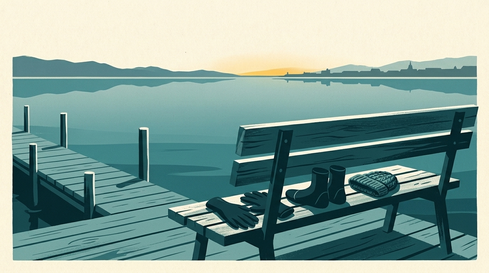

Kurz gesagt
Ein Neoprenanzug hilft, die Wärme zu halten und zu schwimmen, besonders unter 18 °C, doch er verhindert weder Kälteschock noch Unterkühlung, und die RLSS rät Anfängern auch im Anzug von Wasser unter 12 °C ab. Fürs klassische Winterbaden nennt Helsana Mütze, Schwimmboje, Handtuch und warme Kleidung und bei Bedarf Neoprenhandschuhe und -socken.
Was ein Anzug leistet und was nicht
Laut RLSS ist das Schwimmen im Neoprenanzug im Freiwasser in der Regel sicherer, besonders bei Wassertemperaturen von 18 °C oder weniger: Er hilft, die Wärme zu halten, und verbessert den Auftrieb. Aber man kann auch im Anzug Kälteschock und Unterkühlung erleben, und die RLSS rät Anfängern davon ab, in Wasser unter 12 °C zu schwimmen. Ein Anzug ersetzt also nicht die schrittweise Gewöhnung.
Welche Dicke?
Die RLSS gibt eine Übersicht, als grobe Grössenordnung zu verstehen:
- über 20 °C: nicht unbedingt ein Anzug, ein dünner von 1 bis 2 mm kann genügen;
- 16 bis 20 °C: 2 oder 3 mm;
- 14 bis 17 °C: 3 oder 4 mm;
- 11 bis 14 °C: 4 oder 5 mm;
- unter 12 °C: 5 mm oder mehr.
Die Wahl hängt auch davon ab, wie kälteempfindlich man ist, vom Können und von den Bedingungen. Ein gut sitzender Anzug hält warm, weil er das zwischen Anzug und Haut zirkulierende Wasser begrenzt, ohne die Bewegung einzuschränken. Mehrere Modelle anprobieren.
Handschuhe, Schuhe und der Rest
Fürs Winterbaden ohne Anzug empfiehlt Helsana eine Kopfbedeckung (Badekappe oder Mütze), eine Schwimmboje oder einen Dry-Bag, ein Handtuch, warme Kleidung und ein warmes Getränk für danach und bei Bedarf Neoprenhandschuhe und -socken. Und aus Sicherheitsgründen, eine zweite Person mitzunehmen. Die ganze Liste: die Ausrüstung fürs Winterbaden.
Nach dem Bad
Nasses Neopren kühlt aus: schnell ausziehen und trockene Kleidung anziehen. Die Schweizerische Lebensrettungs-Gesellschaft rät direkt nach dem Bad von der heissen Dusche ab und empfiehlt ein lauwarmes Getränk: mehr zum Afterdrop.
Das Wasser von heute, Badeplatz für Badeplatz, steht in der App.
Das Wasser des Sees im Moment
Die Wassertemperatur jedes Badeplatzes steht in der App Mein See, alle drei Stunden aktualisiert.
Hinweis. Dieser Artikel gibt allgemeine Informationen aus den genannten Quellen wieder; er ersetzt keinen ärztlichen Rat. Baden in kaltem Wasser belastet das Herz stark und kann gefährlich sein: Lass dich vor dem Beginn von einer Ärztin oder einem Arzt beraten, besonders bei Herzproblemen, Bluthochdruck oder Schwangerschaft. Geh nie allein ins Wasser und befolge die Anweisungen der Rettungsschwimmer. Du badest auf eigene Verantwortung; im Notfall wähle in der Schweiz die 144 oder die 112.